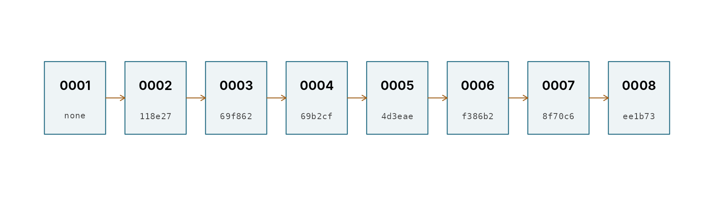

Inside the logs: projects, entries, checksums and the run log
pdmS7 documentation
Source:vignettes/log-structure.Rmd
log-structure.RmdpdmS7 keeps two kinds of log. A calibration log records how one model was calibrated: every decision, by whom, with which data and parameters, and why. A run log records every time a model is run, so any result can be traced to the parameters behind it. This article opens both up: what files they are, what is in them, and how they guard against being quietly changed. Logging a manual calibration shows how to use them; the design record explains why they are built this way.
A small project to look inside
set.seed(1)
n <- 24 * 40
time <- seq(as.POSIXct("2024-01-01", tz = "UTC"), by = 3600, length.out = n)
forcing <- data.frame(time = time, pet = 0.05,
rain = ifelse(stats::runif(n) < 0.07, stats::rgamma(n, 0.7, scale = 3), 0))
truth <- pdm_presets("standard")
truth$area_km2 <- 30
observed <- run_pdm(pdm_from_config(truth), forcing)$output$q_m3s
options(pdmS7.user = "Ann Hydrologist", pdmS7.role = "custodian")
project <- file.path(tempdir(), "inside")
start_calibration_project(project, catchment = "Example Brook", gauge = "99003",
purpose = "Illustration", area_km2 = 30,
owner = "Deputy Director", steward = "Sam Steward")
register_data(project, forcing, observed, calibration = c(121, 600),
validation = c(601, 800), test = c(801, n))
start <- truth
start$fc <- 0.9
select_structure(project, start, "Standard PDM.")
log_trial(project, parent = 3, changes = c(fc = 1), verdict = "better",
reasoning = "Volume was 10 per cent low.")
log_note(project, "Gauge checked against the station log.", refers_to = 2)
propose_candidate(project, entry = 4, reasoning = "Best so far.")
validate_candidate(project, "Holds on validation.")
test_candidate(project, "Holds on the final window.")The project folder
files <- list.files(project, recursive = TRUE, all.files = TRUE)
files[!grepl("^report/", files)]
#> [1] "data/0002/forcing.csv" "data/0002/observed.csv"
#> [3] "entries/0001-project_start.yml" "entries/0002-data_registered.yml"
#> [5] "entries/0003-structure_selected.yml" "entries/0004-trial.yml"
#> [7] "entries/0005-note.yml" "entries/0006-candidate.yml"
#> [9] "entries/0007-validation.yml" "entries/0008-test.yml"
#> [11] "pdms7-project.yml" "series/0006.csv"
#> [13] "series/0007.csv" "series/0008.csv"| Path | Holds |
|---|---|
pdms7-project.yml |
Marks the folder as a project: format version and identifier |
entries/ |
One YAML file per entry, numbered in the order written, never edited |
data/0002/ |
Copies of the data registered by entry 0002, as CSV |
series/ |
Full simulated and observed flow for candidate, validation and test entries |
report/ |
The generated report, rebuilt on demand and never edited |
Everything is plain text. A project can be read with any editor, kept on a shared drive or in git, and archived as it is.
An entry
Here is the trial, entry 0004, exactly as written:
cat(readLines(file.path(project, "entries", "0004-trial.yml")), sep = "\n")
#> # pdmS7 calibration log entry. Written once; never edit. verify_project() checks it.
#> format: 1
#> id: '0004'
#> type: trial
#> timestamp: '2026-11-01T18:39:36Z'
#> author:
#> name: Ann Hydrologist
#> role: custodian
#> login: root
#> software:
#> pdmS7: 0.3.1
#> r: 4.3.3
#> platform: x86_64-pc-linux-gnu
#> engine: c
#> previous: 69b2cf77d13e35e0b5e1d856630d2c8a
#> registration: '0002'
#> parent: '0003'
#> changes:
#> fc:
#> from: 0.9
#> to: 1.0
#> configuration:
#> distribution:
#> type: pareto
#> cmin: 0.0
#> cmax: 140.0
#> b: 0.4
#> recharge:
#> type: standard
#> kg: 24.0
#> bg: 1.0
#> st: 0.0
#> surface:
#> type: cascade
#> k1: 2.0
#> k2: 4.0
#> groundwater:
#> type: cubic
#> kb: 10000.0
#> solver: adaptive
#> be: 1.0
#> fc: 1.0
#> td: 0.0
#> qc: 0.0
#> area_km2: 30.0
#> dt: 1.0
#> scores:
#> nse: 1.0
#> log_nse: 1.0
#> kge: 0.9999999999999998
#> kge_r: 1.0
#> kge_alpha: 1.0000000000000002
#> kge_beta: 1.0
#> rmse: 3.973382158910592e-15
#> log_rmse: 4.032376870133154e-15
#> volume_error: 0.0
#> abs_volume_error: 0.0
#> peak_error: 8.881784197001252e-16
#> fdc_high: -5.2473942796622905e-16
#> fdc_mid: 3.2452207057899907e-15
#> fdc_low: -1.2724042040683314e-15
#> output_md5: bdedca7a3fce213ae4fd135670d4fae4
#> verdict: better
#> reasoning: Volume was 10 per cent low.Every entry starts with the same header:
| Field | Content |
|---|---|
format |
Entry format version |
id |
Four-digit sequence number, as in the file name |
type |
One of the eleven entry types |
timestamp |
When it was written, UTC |
author |
Declared name and role, and the operating-system login |
software |
pdmS7 version, R version, platform and engine |
previous |
Checksum (MD5) of the entry before it |
The rest depends on the type. Numbers are written with the fewest digits that reproduce the exact value, so a configuration read back from the log is the configuration that ran.
The eleven entry types
| Type | Written by | Role | Key fields |
|---|---|---|---|
project_start |
start_calibration_project() |
Custodian | Catchment, gauge, purpose, area, Owner, Steward |
data_registered |
register_data() |
Custodian | Files and checksums, data quality, scoring windows, thresholds, headline |
structure_selected |
select_structure() |
Custodian | Configuration, scores, output checksum, reasoning |
trial |
log_trial() |
Custodian | Parent, changes, configuration, scores, output checksum, verdict, reasoning |
auto_calibration |
log_auto_calibration(),
compare_structures()
|
Custodian | Bounds, scales, method, objective, starts, every start’s result, configuration, scores |
note |
log_note() |
Any | Text and the entry it concerns |
candidate |
propose_candidate() |
Custodian | The run proposed, its scores, the saved series |
validation |
validate_candidate() |
Custodian | Validation scores beside calibration scores, saved series |
test |
test_candidate() |
Custodian | Test scores, scored once, saved series |
sign_off |
sign_off_project() |
Steward or Delegated Steward | Candidate, final configuration, checklist, statement |
reopen |
reopen_project() |
Steward or Delegated Steward | Reason |
Trials, automatic calibrations and structures form a tree: every run names its parent, so the log records the path taken, dead ends included.
read_project(project)$entries[, .(id, type, author, summary)]
#> id type author
#> <char> <char> <char>
#> 1: 0001 project_start Ann Hydrologist
#> 2: 0002 data_registered Ann Hydrologist
#> 3: 0003 structure_selected Ann Hydrologist
#> 4: 0004 trial Ann Hydrologist
#> 5: 0005 note Ann Hydrologist
#> 6: 0006 candidate Ann Hydrologist
#> 7: 0007 validation Ann Hydrologist
#> 8: 0008 test Ann Hydrologist
#> summary
#> <char>
#> 1: Example Brook - Illustration
#> 2: 960 rows
#> 3: Standard PDM.
#> 4: fc 0.9 -> 1 (better)
#> 5: Gauge checked against the station log.
#> 6: Entry 0004
#> 7: Candidate 0006
#> 8: Candidate 0006 testedThe checksum chain
Each entry stores the checksum of the entry before it. Change one
character of an earlier entry and its checksum changes, so the next
entry’s previous no longer matches. Delete an entry, or
slip one in, and the numbering or the chain breaks.
ids <- read_project(project)$entries$id
previous <- vapply(ids, function(i) read_entry(project, i)$previous, character(1))
k <- length(ids)
par(mar = c(0.5, 0.5, 0.5, 0.5))
plot(NA, xlim = c(0.5, k + 0.5), ylim = c(0, 1), axes = FALSE, xlab = "", ylab = "")
rect(seq_len(k) - 0.38, 0.35, seq_len(k) + 0.38, 0.75, col = "#eef4f6", border = pal[1])
text(seq_len(k), 0.62, ids, font = 2, cex = 0.85)
text(seq_len(k), 0.45, substr(previous, 1, 6), cex = 0.6, family = "mono", col = pal[5])
arrows(seq_len(k - 1) + 0.38, 0.55, seq_len(k - 1) + 0.62, 0.55, length = 0.06, col = pal[2])
Each entry’s ‘previous’ field holds the checksum of the entry before it (first six characters shown).
verify_project() walks the chain, checks every data and
series file against its checksum and, with rerun = TRUE,
repeats every run and compares the output checksum.
verify_project(project, rerun = TRUE)[, .N, by = .(check, ok)]
#> check ok N
#> <char> <lgcl> <int>
#> 1: numbering TRUE 8
#> 2: chain TRUE 8
#> 3: data forcing TRUE 1
#> 4: data observed TRUE 1
#> 5: series TRUE 3
#> 6: rerun TRUE 4Suppose someone tidies the reasoning of the trial after the event:
file <- file.path(project, "entries", "0004-trial.yml")
original <- readLines(file)
writeLines(sub("10 per cent", "8 per cent", original), file)
verify_project(project)[ok == FALSE]
#> check entry ok detail
#> <char> <char> <lgcl> <char>
#> 1: chain 0005 FALSE Previous entry altered, removed or inserted
writeLines(original, file)The edit to 0004 shows up at 0005, whose stored checksum no longer matches. Three details make the checks dependable in practice:
- Line endings. Checksums ignore carriage returns, so a Windows checkout that converts line endings does not break the chain.
- Output checksums are taken on flow rounded to 10 significant figures, so a project logged on one version of R verifies by rerun on another.
- The newest entry has no successor to vouch for it. Sign-off, version control, or a managed drive covers it.
Writers take a lock on the project folder while appending, so two people working in one project on a shared drive cannot interleave entries.
The run log
The calibration log records how parameters were chosen; the run log records where they were used. It is off unless a path is set.
log_file <- file.path(tempdir(), "runs.csv")
register <- file.path(tempdir(), "approved.yml")
writeLines(c("projects:", paste0(" - ", basename(project))), register)A register is a YAML file listing the projects whose signed-off configurations count as approved, with paths relative to the file:
options(pdmS7.run_log = log_file, pdmS7.register = register, pdmS7.run_tag = "example")
candidate <- read_entry(project, 6)$configuration
invisible(run_pdm(pdm_from_config(candidate), forcing[1:48, ]))
invisible(run_pdm(pdm_from_config(start), forcing[1:48, ]))
runs <- read_run_log(log_file)
names(runs)
#> [1] "timestamp" "user" "login" "tag" "fingerprint"
#> [6] "data_md5" "rows" "start" "end" "dt_hours"
#> [11] "area_km2" "engine" "pdmS7" "r" "seconds"
#> [16] "status" "message" "approval" "project" "sign_off"
runs[, .(tag, fingerprint = substr(fingerprint, 1, 8), rows, status, approval)]
#> tag fingerprint rows status approval
#> <char> <char> <int> <char> <char>
#> 1: example a42af148 48 ok unapproved
#> 2: example 4df8c99c 48 ok unapproved| Column | Content |
|---|---|
timestamp, user, login,
tag
|
When, who, and an optional label from
options(pdmS7.run_tag = )
|
fingerprint |
Checksum of the model’s components and parameters; see
pdm_fingerprint()
|
data_md5, rows, start,
end
|
The forcing used |
dt_hours, area_km2, engine,
pdmS7, r
|
Model and software |
seconds, status, message
|
Run time, and the error if it failed |
approval, project,
sign_off
|
approved, superseded or
unapproved, and the sign-off matched |
Both runs show as unapproved: this project is validated
and tested but not signed off. Once a Steward signs it off, runs with
the candidate’s parameters are marked approved, with the
project and sign-off entry; if the project is later reopened, they
become superseded. Runs are never blocked.
The fingerprint recognises a model however it was built, from code, a preset or YAML, because it is taken on the model’s components and parameters, not on how they were written:
identical(pdm_fingerprint(candidate), pdm_fingerprint(pdm_from_config(candidate)))
#> [1] TRUECalibration evaluations, spin-up cycles and the calibration log’s own reruns are not logged, so the run log holds the runs people make. Logging is off by default, and a failure to write the log warns once and never stops a run.
Reading the logs
| Function | Returns |
|---|---|
read_project() |
Project details, status and one row per entry |
read_entry() |
One entry in full |
project_trials() |
Every run with parent, changes, scores, verdict and reasoning |
read_projects() |
One row per project, for a team folder or a large-sample batch |
structure_comparison() |
A structure comparison’s ranking, rebuilt from the log |
verify_project() |
The integrity checks |
build_report() |
The report, as HTML and Markdown |
read_run_log() |
The run log |
approved_configurations() |
Every sign-off in a register, current or superseded |